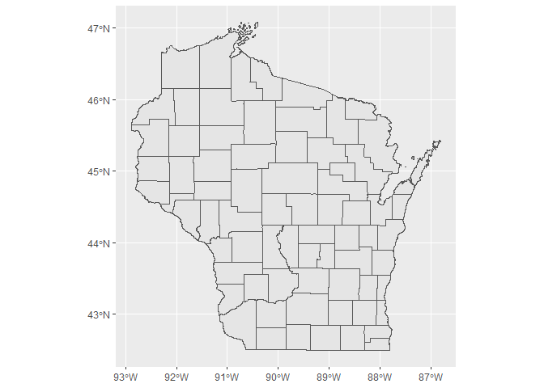

The arcpullr package provides functions for pulling spatial data from an ArcGIS REST API and formatting those layers into either sf or Raster* objects (depending on the layer being requested). These functions provide the basis for retrieving spatial data housed in an ArcGIS REST API using either spatial or relational queries. The output from these querying functions is intended to work seamlessly with other spatial packages already implemented and established in R. This package was neither produced nor is maintained by Esri.
Installation
#Install directly from CRAN:
install.packages("arcpullr")
# Or the development version from GitHub:
# install.packages("devtools")
devtools::install_github("pfrater/arcpullr")Example
The below example demonstrates how to use arcpullr to query the Wisconsin Department of Natural Resources County ArcGIS Rest API
library(arcpullr)
#> Loading required package: sf
#> Linking to GEOS 3.9.1, GDAL 3.2.1, PROJ 7.2.1; sf_use_s2() is TRUE
wdnr_server <-"https://dnrmaps.wi.gov/arcgis/rest/services/"
counties <- "DW_Map_Dynamic/EN_Basic_Basemap_WTM_Ext_Dynamic_L16/MapServer/3"
wi_counties_url <- paste(wdnr_server,counties,sep ="/")
wi_counties <- get_spatial_layer(wi_counties_url)
ggplot2::ggplot() +
ggplot2::geom_sf(data = wi_counties)